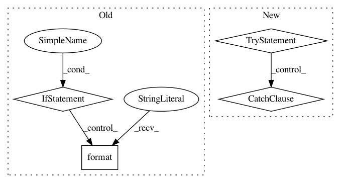

e5a98adc53c682047bd6873c127c9c94588b28ab,Python/phate/mds.py,,embed_MDS,#,38
Before Change
// initialize all by CMDS
Y = cmdscale_fast(X_dist, ndim)
if how in ["metric", "nonmetric"]:
_logger.debug("Performing metric MDS on "
"{} of shape {}...".format(type(X_dist),
X_dist.shape))
// Metric MDS from sklearn
Y, _ = manifold.smacof(X_dist, n_components=ndim, metric=True, max_iter=3000,
eps=1e-6, random_state=seed, n_jobs=n_jobs,
n_init=1, init=Y, verbose=verbose)
if how == "nonmetric":
_logger.debug(
"Performing non-metric MDS on "
"{} of shape {}...".format(type(X_dist),
After Change
return Y
// metric is next fastest
try:
// use sgd2 if it is available
Y = sgd(X_dist, n_components=ndim, random_state=seed, init=Y)
except NotImplementedError:
// sgd2 currently only supports n_components==2
Y = smacof(X_dist, n_components=ndim, random_state=seed, init=Y, metric=True)
if how == "metric":
return Y
// nonmetric is slowest
Y = smacof(X_dist, n_components=ndim, random_state=seed, init=Y, metric=False)
In pattern: SUPERPATTERN
Frequency: 3
Non-data size: 4
Instances
Project Name: KrishnaswamyLab/PHATE
Commit Name: e5a98adc53c682047bd6873c127c9c94588b28ab
Time: 2019-12-01
Author: scottgigante@gmail.com
File Name: Python/phate/mds.py
Class Name:
Method Name: embed_MDS
Project Name: deeppomf/DeepCreamPy
Commit Name: 569305e77b02632e215ef9df99de87dc6da8879b
Time: 2019-04-22
Author: 46418312+ccppoo@users.noreply.github.com
File Name: decensor.py
Class Name: Decensor
Method Name: decensor_all_images_in_folder
Project Name: maxpumperla/elephas
Commit Name: 3244cbc512a6b617600a91ec60b65e3e01d2b1dc
Time: 2018-09-05
Author: max.pumperla@googlemail.com
File Name: elephas/java/__init__.py
Class Name:
Method Name: